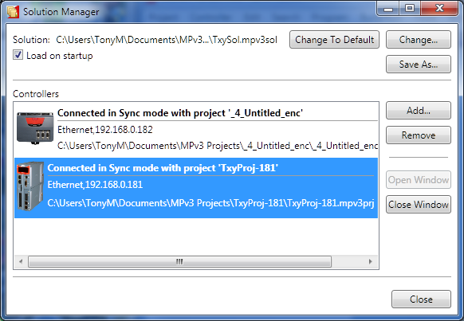
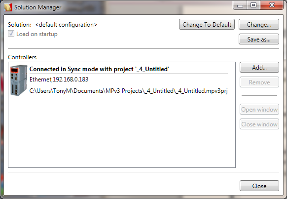
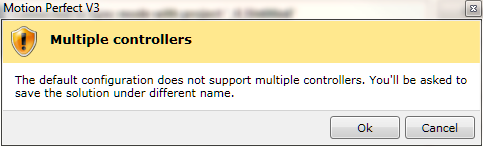

Solution Manager

The Solution Manager is used to manage a collection of
projects (solution) which are used for applications containing multiple
controllers. In single applications which contain only one project,
Motion
Perfect uses a default solution so that the user does not need to use the
solution manager.
The default solution cannot contain more than one project.
Controls
"Load on Startup" Checkbox
If checked, the solution manager and the current solution
will be loaded when
Motion Perfect is started.
"Change To Default" Button
Change to the default solution.
"Change" Button
Change to a different solution.
"Save As" Button
Save the current solution under a new name
"Add" Button
Add a controller (connection) to the solution.
"Remove" Button
Remove the currently selected controller (connection) from
the solution
"Open Window" Button
Open a window for the currently selected controller
"Close Window" Button
Close the open window for the currently selected controller
"Close" Button
Close the "Solution Manager" window
Creating a Solution
-
Create a project for one controller as normal.
-
Open the "Solution Manager" from the Project section of
the main menu. This will display the existing project as part of the
"Default Solution".

-
Click on the "Add" button. A warning about multiple
controllers will be displayed.

-
Clicking on the "OK" button will cause the "
Connection Dialog
" to be displayed.
Configure an appropriate connection for another controller. On closing the
"Connection Dialog" you will be prompted to save the solution. A
desktop window will appear for the connection to the new controller.
-
To associate a project with the new controller, attempt to
connect to it in Sync Mode (this may happen automatically depending on the
stored state of the connection). The "
Controller Project Dialog
" will be
displayed to allow this.